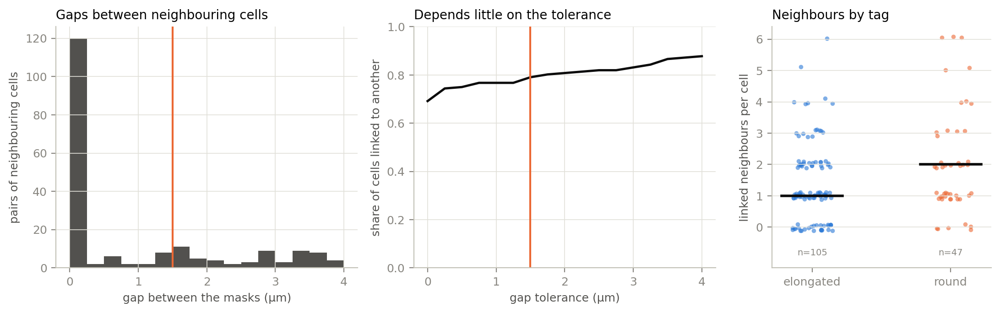

Preliminary analysis: round and elongated osteocytes
Preliminary. One annotator tagged the cells by eye, and some calls were borderline. All cells come from 8 confocal stacks, so they are not independent samples (see Caveats). Figures and tables are produced by local-analysis/preliminary_report.py from data/aggregate/ and the tags.
Segmentation
Each stack has two channels: channel 0 shows nuclei and channel 1 shows the Texas red dye filling the lacuno-canalicular network. Stacks are resampled to cubic voxels of 0.45–0.48 µm. The steps are:
- Seeds. Cleaned channel-0 nuclei seed one region each. Very large channel-0 components are soft tissue, not nuclei.
- Soft tissue. Channel 1 is thresholded and eroded so that osteocytes detach from the soft tissue. Eroded components that are too large are labelled soft tissue and become a competing seed.
- Watershed. A seeded watershed runs on the channel-1 foreground, splitting the dye signal between the cells.
- Filters. The following regions are removed:
- regions near the edge of the bone, judged by distance from the in-plane convex hull of the cells;
- regions lying beyond the soft tissue;
- regions without a nucleus (regions holding several nuclei are split at them);
- in some stacks, sheet-like regions.
Thresholds were tuned per stack because the dye intensity varies. Each stack’s parameters are in its summary.json, and its 3D scene and gallery are on its series page.
Dendrites
Let \(M\) be a cell’s voxel mask. The body \(B\) is the morphological opening of \(M\) by a ball of radius \(r = 2\) voxels, which removes everything thinner than about \(2r + 1 \approx 2.4\) µm. Let \(d_B(\mathbf{x})\) be the distance of voxel \(\mathbf{x}\) from \(B\). Each connected component \(P\) of \(M \cap \{d_B > r\}\) is a protrusion, with
\[ \text{reach}(P) = \max_{\mathbf{x} \in P} d_B(\mathbf{x}). \]
A protrusion counts as a dendrite when two conditions hold:
- its reach is at least 2 µm (shorter ones are surface roughness);
- it is thin in two directions, i.e. not a sheet.
To test thinness, let \(\lambda_1 \ge \lambda_2 \ge \lambda_3\) be the eigenvalues of the covariance of the protrusion’s voxel coordinates. A protrusion with linearity \(\sqrt{\lambda_2/\lambda_1} \ge 0.65\) and planarity \(\sqrt{\lambda_3/\lambda_2} \le 0.25\) is broad and flat. Such a protrusion is a thin rim of the flattened cell body, which the opening strips because it tests thickness only. It is assigned to the body and not counted.
The cell body used below is the cell minus its counted dendrites. Each cell’s dialog on its series page has a rotating image of this classification.
Manual tagging
Every segmented cell was tagged by eye in a dedicated browser app (local-analysis/annotate.py). The app shows a rotating 3D projection of the dye signal and orthogonal maximum projections. Cells come in a fixed random order with no stack, label or measurement shown, so the tagging is blind to the numbers. The tags are:
- elongated;
- round;
- blob/outlier;
- unsure.
Blob/outlier and unsure cells were reviewed a second time and judged junk, real but dirty, real (clean) or unsure. Junk cells are dropped from everything. Real cells that still have no type are kept in the counts but left out of the two-group comparison.
Of the 203 segmented cells, 31 were judged junk (segmentation artefacts, fragments, soft tissue) and removed. Of the remaining 172, 105 were tagged elongated and 47 round; 20 real but irregular cells could not be given a type and are left out of the comparison.
| stack | segmented | kept | elongated | round | not typed |
|---|---|---|---|---|---|
| sample 1.1 | 51 | 36 | 19 | 11 | 6 |
| sample 1.3 | 17 | 14 | 6 | 7 | 1 |
| sample 1.4 | 40 | 37 | 18 | 13 | 6 |
| sample 2.1_ultrasonic cleaned | 21 | 20 | 16 | 4 | 0 |
| sample 3.1 | 23 | 20 | 16 | 2 | 2 |
| sample 3.2 | 27 | 23 | 20 | 0 | 3 |
| sample 4.1 | 9 | 7 | 3 | 4 | 0 |
| smple 1.2 | 15 | 15 | 7 | 6 | 2 |
| total | 203 | 172 | 105 | 47 | 20 |
Stacks 3.1 and 3.2 contain almost no round cells. All the group tests below therefore compare cells within each stack, so differences between stacks cannot pass for differences between the groups.
Metrics
Take the voxel coordinates of a region, in µm, with covariance eigenvalues \(\lambda_1 \ge \lambda_2 \ge \lambda_3\). Its axes are the full axes of the solid ellipsoid with the same second moments:
\[ a_k = 2\sqrt{5\lambda_k}, \qquad a_1 \ge a_2 \ge a_3 . \]
| metric | definition |
|---|---|
| body length, width, thickness \(a_1, a_2, a_3\) | axes of the cell body (dendrites removed) |
| body volume \(V_b\), cell volume \(V\) | voxel count × voxel volume, without / with the dendrites |
| cell axis ratio \(a_2/a_1\) | axes of the whole cell; 0 = needle, 1 = round in its widest plane |
| body axis ratios \(a_2/a_1\), \(a_3/a_2\) | the same for the body; \(a_3/a_2\) low = flattened |
| solidity \(S\) | \(V / V_{\text{convex hull}}\) |
| dendrites per cell \(N_d\) | counted protrusions (see Dendrites) |
| dendrite reach | mean and maximum of \(\text{reach}(P)\) over the cell’s dendrites |
| total dendrite path | summed length of the dendrites’ pruned skeletons beyond the body |
| process fraction \(f_p\) | \(1 - V_b / V\) |
| dendrite starriness \(s\) | \(1 - (t_1 - t_2)\), see below |
| nucleus volume | channel-0 nucleus voxels inside the cell |
Starriness. Let \(\hat{\mathbf{u}}_i\) be the unit vector from the base to the tip of dendrite \(i\) (cells with at least 3 dendrites). Let \(t_1 \ge t_2 \ge t_3\) be the eigenvalues of the orientation tensor \(T = \frac{1}{N_d}\sum_i \hat{\mathbf{u}}_i \hat{\mathbf{u}}_i^{\top}\). Then \(s = 0\) when all dendrites lie along one axis, and \(s = 1\) when they spread in a plane or in 3D.
Connected cells
How many cells are in contact with others, through their processes or bodies? This is measured directly on the label volumes:
- Gap. For every pair of cells less than 4 µm apart, the gap is the free space between their masks: \(d_{\min} - 1\) voxels, with \(d_{\min}\) the shortest distance between a voxel of one and a voxel of the other. Masks whose faces touch have gap 0.
- Link. Two cells are linked if their gap is at most 1.5 µm (about 3 voxels). The tolerance allows for thin canaliculi broken by thresholding, the erosion step or partial-volume effects.
- Groups. Groups are chains of linked cells.
- Where they meet. Each side of a contact lies either in the cell’s body (the opening used for the dendrites) or in a process.
| stack | cells | isolated | in a group | groups | largest group |
|---|---|---|---|---|---|
| sample 1.1 | 36 | 5 | 31 | 8 | 7 |
| sample 1.3 | 14 | 5 | 9 | 2 | 7 |
| sample 1.4 | 37 | 5 | 32 | 4 | 23 |
| sample 2.1_ultrasonic cleaned | 20 | 7 | 13 | 2 | 11 |
| sample 3.1 | 20 | 0 | 20 | 3 | 12 |
| sample 3.2 | 23 | 12 | 11 | 4 | 5 |
| sample 4.1 | 7 | 2 | 5 | 2 | 3 |
| smple 1.2 | 15 | 0 | 15 | 2 | 11 |
| total | 172 | 36 | 136 | 27 | 23 |
With this tolerance 136 of 172 kept cells (79%) are linked to at least one other, in 27 groups; 36 are isolated. Of the 140 links, 108 are direct contacts (median contact area 6 µm²) and 32 are near-contacts. 119 meet process to process, 16 body to process and 5 body to body.

How to read this. The watershed splits continuous dye between the nuclei. Two cells therefore touch whenever the dye is continuous between them at the stack’s threshold, and the contact surface is where the watershed drew the boundary. A link means continuous or nearly continuous dye. It does not prove that two processes join, but almost all links are between processes, not merged bodies.
- Most cells are linked. About 80% of kept cells belong to a group, and the share hardly depends on the tolerance: from about 70% requiring contact to under 90% at 4 µm.
- Stack 3.2 is the exception. It has the most isolated cells and the highest foreground threshold. Thresholds differ between stacks, so compare numbers within a stack.
- Links through excluded cells are not seen. These include junk, rejected regions, soft tissue and the stack edges.
- Round cells have somewhat more linked neighbours. This is expected given their larger size and dendrite count.
Groups in 3D
Every group with at least 5 cells is shown below. Each cell is shaded by its tag (blues elongated, oranges round, greys untyped), with the shade alternating so that neighbours stay distinct. Black spheres mark contacts and grey spheres near-contacts. Drag to rotate and scroll to zoom. The meshes are simplified for the web.
Main conclusions (preliminary)
- Round and elongated cells have the same length. Body length \(a_1 \approx 28\) µm in both groups. “Round” cells are wider and especially thicker: body thickness is about 9 µm against 6 µm. “Round” therefore means a fuller cross-section, not a shorter cell.
- Round cells are larger. Body volume is about 2× higher in medians, and about 1.4× after stack effects. This follows largely from the thicker cross-section at equal length.
- Round cells have more dendrites (median 10 vs 6), mostly because they are bigger. At equal size the difference vanishes for small cells. Among larger cells, round ones tend to have a few more (Figure 3), but this rests on a handful of very branched cells: it is suggestive, not established. Dendrite length (reach, process fraction) and arrangement (starriness) do not differ.
- No discrete phenotypes. Size and dendrite count give one continuous population with the round cells shifted within it, not two clusters. The manual tags capture a real gradient: they are recovered with AUC ≈ 0.85, well above chance and short of perfect.
- Nucleus volume and solidity do not differ.
- No clear radial pattern. Round cells lean slightly towards the axis of the section, but not beyond chance at this sample size.
- Most cells are connected to neighbours. About 80% of kept cells are linked to at least one other, almost always process to process. Groups contain up to 23 cells, so the segmented cells form networks rather than isolated units.
Caveats
- One annotator, with borderline calls. Inter-rater agreement is not yet measured. Shape differences are partly circular, because the tags were given by looking at shape. The size and dendrite results are less so, but dendrites are visible in the images used for tagging.
- Cells are nested in stacks, and stacks in bone samples. The within-stack permutation removes stack-level differences but treats cells in a stack as independent. Stacks 1.1–1.4 come from the same bone sample, so the effective number of independent samples is about 4. A mixed model with sample as a random effect is the natural next step once more samples are imaged.
- Segmentation parameters differ between stacks. Absolute volumes and counts are not comparable across stacks. This is a further reason to compare within stacks.
- Cells near the stack edges or soft tissue were filtered out, and dendrites beyond the dye penetration are missed. Counts are lower bounds.